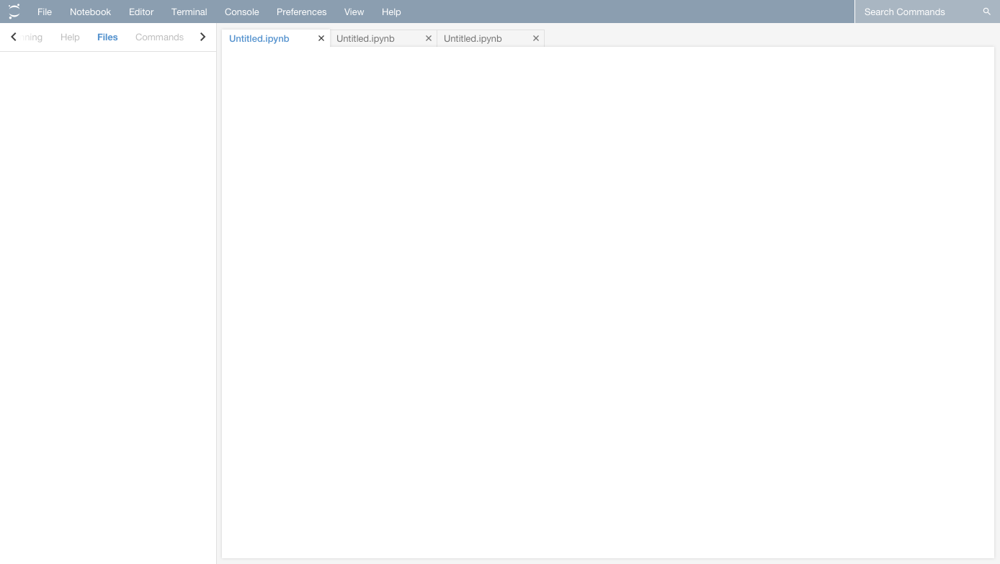
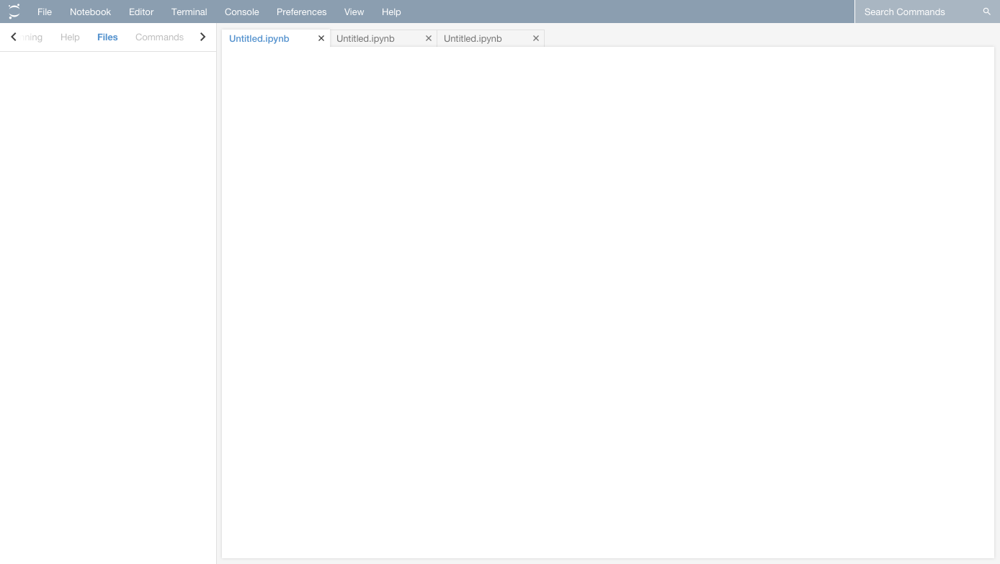

Jupyter is a open source company that creates an interactive scientific computing platform used by over 30 million people.
At Jupyter I worked on a computing environment called JupyterLab. JupyterLab is a multi-window wep app that helps developers run Jupyter Notebooks. I worked as both a software engineer and as a UI/UX Designer on the project. I was involved in the entire software process from finding problems with the app, coming up with solutions, getting community feedback, implementing the final solution, and user testing to see if our solution worked as intended.
I also worked on our website and tried to improve site navigation by redoing the navbar (those changes arent live yet).
Finally I created official brand guidelines for the project that specified correct usage of our logo and unified or brand usage across over 10 repositories.
Jupyter Lab
 

About JupyterLab
JupyterLab is a multi-window wep app that helps scientists run Jupyter Notebooks. Most of my work on the product was done in either Typescript (a flavor of Javascript) or CSS. JupyterLab is extensible which means most of its functionality comes from community-built extensions called "widgets".
My Work
Over the summer, I redid the Image Widget, made an FAQ Page widget, and redesigned the application's command pallete.
Our team also started working on a future design of JupyterLab. Our design (see 3rd picture) simplified naviagtion by only using one sidepanel instead of two, and simplified the visual hierarchies by modernizing our color palette. We went from a plethora of differnet shades of greys, to 2 greys and white. We also made a bolder navbar to help distinguish our navbar from your web browsers.
Download on GitHub
Brand Guidelines
The project was suffering from a lack of consistent brand messaging.
We had dozens of different versions of our logo across different repositories and sites, and the logo was being modified in unaestethic ways.
We first created a new version of the logo that was very similar to the other versions, but standardized sizes and colors.
Then we created this brand book that layed out rules for the entire project on how to use the brand and logo into a official and beautiful document.
Finally, I went through all our projects assets and fixed misuses across the project.